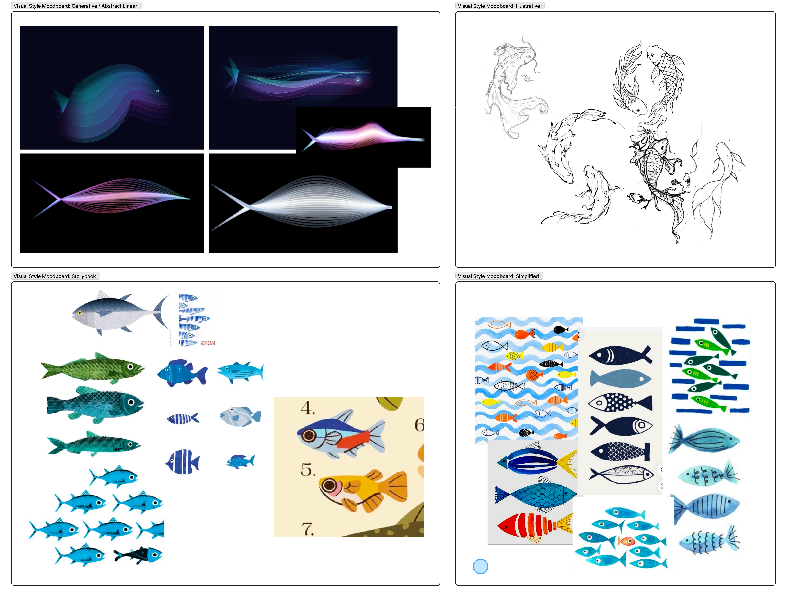

Challenge
Propose a design-led response that investigates a specific problem within the digital legacy space. Explore how design can make these systems more humane, accessible, ethical, or culturally responsive.
My Role
My role as one of the interactive designers was initial research, content architecture, and transmedia experience — distinct from teammates handling wireframing/user flow, branding, and storyboards. I built and coded the site itself, end to end, in vanilla HTML, CSS, and JavaScript.
DISCOVER

Our initial research explored the wider K-pop industry, looking at how branding and themes of feminism are used within group concepts and presentation. Across the groups we studied, a pattern kept surfacing: girl groups are still largely controlled by male-dominated entertainment companies, so even when a group appears independent, that "empowerment" is often shaped by the industry above them.
That contradiction became our core problem statement, and it's what pushed us to ask how a group could feel real instead of engineered.

I also led research into transmedia campaigns across different platforms and industries — from how K/DA's members are portrayed and built up across social media, to immersive world-building projects like Prometheus. Seeing how narratives shift between physical and digital touchpoints helped inform how we mapped out Cadence's own presence: a main launch, digital platforms, physical media, and fan interaction, all built out from one central hub.
DEFINE
Initially, the website was a scrollytelling origin experience. a linear, scroll-based narrative revealing the group's origin story through guided interaction. But once the motion piece leaned further into being its own origin video, that concept for the website became redundant.

Looking at aespa's website as a field review shifted our direction — the site as a space for content and interaction rather than a story to scroll through, positioning the group's debut around fan engagement and understanding each member individually. From there, the concept became a desktop-style interface: all of Cadence's content living inside one cohesive, interactive environment instead of separate pages.
CLARIFY
Working alongside Mhayvine, we built a visual elements moodboard from scratch to establish a consistent visual direction — pulling from bold, high-contrast graphic styles rather than anything softly "girl group" coded, in keeping with our thesis.


CONCEPTUALISE
Initially, we went with a pixel style for the fish, but felt that this direction felt too childish.
We explored other visual styles, running a vote and asking participants to compare options, and landed on generative/abstract. Participants said it felt futuristic, eye-catching, and more reflective of data as a dynamic, evolving system compared to more literal or pixel-based styles.

Working on coding the website

Working closely with Mhayvine, we developed the general flow of the questionnaire and the UI.


Iterative testing and making changes of screens
We simulated the installation by projecting the tank and flow of the experience from a user standpoint.

Technical testing the interaction
3D mockup in-situ in Silo Park
OUTCOME
The final outcome was Cadence: a girl group whose debut is supported by transmedia collateral across platforms, including social media content, an origin video, a coded hub website, a 3D room, and album design, all built to promote the group's launch.
Try the website prototype! (Best viewed full screen) ↗ instagram ↗
Coding the questionnaire
Applying the environment created by our motion designer, Loveday Tan, to the tank
We also took photos in a smaller scale to see how it would look in real life.


REFLECTION
It's true when they say pick something you enjoy, because this was a project I was genuinely excited about, and I was just as excited about my team, made it a genuinely fun process. Technically, it pushed me from frontend concept work into actually building the site: coding, debugging, and refining every interaction myself. Looking ahead, I'd want to lock in key visual assets earlier in the process to avoid last-minute adjustments, and in future iterations of the site I'd explore more interactions and a more scalable layout for new content going forward.
SEE NEXT